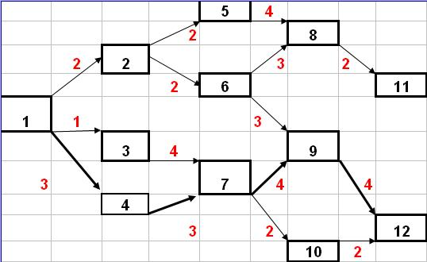
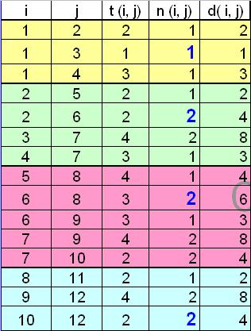
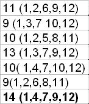
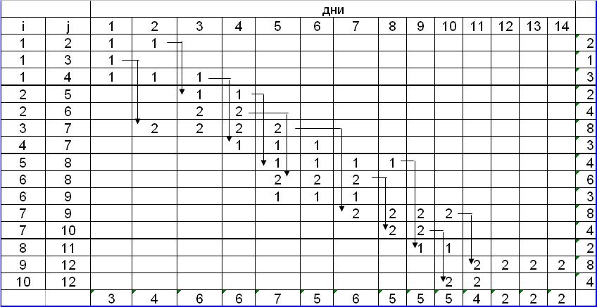

Пример 2
Дано: сетевой граф, рис.9.20.
Вершины графа - этапы работ.
Рёбра графа - выполнение работы. Рёбра имеют длину, обозначающую продолжительность работы и направление, обозначающее последовательность выполнение работы.

Рисунок 9.20 - Сетевой график В
Требуется найти:
- Минимальное количество человек для выполнения проекта с работами 1- 5 сетевого графика А.
- Критический путь и работы критического пути.
- Сформировать календарный график выполнения.
- Произвести оптимизацию графика.
На сетевом графике В все операции могут производиться с постоянной интенсивностью потребления ресурсов.
Число ресурсов для каждой операции фиксировано.
На основании данных графа и количества человек для каждой операции заполним результирующую таблицу.
В таблице на рис.9.21 представлены исходные данные решения задачи, где
i - номер начального события;
j - номер конечного события;
t (i, j) - продолжительность операции;
n (i, j) - требуемое число людских ресурсов;
D (i, j) - трудоемкость операции в чел/дн., вычисляется как t (i, j) х n (i, j).

Рисунок 9.21 - Исходные данные
1. Блоки параллельности выделены жирными линиями и цветом, а количество людей выделено синим цветом на рис.9.21.
На выполнение операций, представленных в сетевом графике В выделено всего 7 человек.
2. Согласно рис.9.20 найдем длительность для каждого из возможных вариантов прохождения графа от первой до последней вершины.

Рисунок 9.22 - Длительность для каждого из возможных вариантов прохождения графа от первой до последней вершины
Критический путь составляет 14 дней , а работы 1-4-7-9-12 являются критическими работами.
3. После заполнения результирующей таблицы и расчета критического пути сформируем календарный график выполнения.

Рисунок 9.23 - Распределение ресурсов
Резерв времени = 0, оптимизация графика без привлечения дополнительного количества людей не имеет смысла.